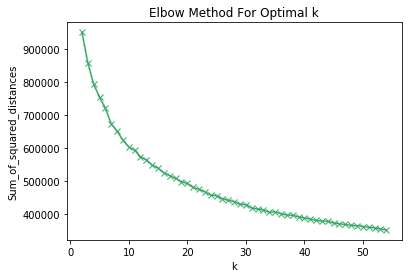
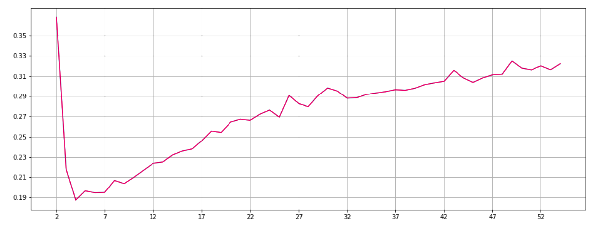
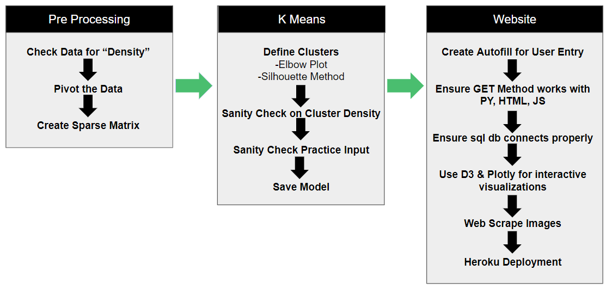

After 6 months of an intensive data science bootcamp what a better topic for our final project
than something we all need alot of right now, beer!
We wanted to create recommendation system for beers, similiar to the netflix recommender. In order to do this we
used the KMeans unsupervised machine learning method in the sklearn package.
We ran the model with the data we have and recommendations are then based off of the mean of the assigned cluster group for the beers which the user has not tried.
This dataset presented a few challenges:
-
Dataset Size: The dataset contained 33,000 users, 55,000 beer brands and 14 beer types which were reviewed by those
users totalling 1.5 million rows. One issue we faced was making the data "dense" or creating a dataset in which there was a more
even spread of of the number of beers and types of beers reviewed per user. Some users rated only a few beers other users
rated thousands. We noticed that when including all users in the KMeans model we were left with extremely large clusters where
80% of the users were categorized into the same cluster, somthing just did not seem right. Futhermore, when we tested those models to predict
a user cluster based on 3 reviews we noticed no matter how random our sample the model would always assign the user to
the same cluster, regrdless of the beer type which meant the model was actually clustering based upon how dense the user
data was as opposed to beer type.
With over 50k beer types/columns and some users only rating a few beers it seemed as if the data density was creating a "garbage in garbage out" type scenario.
After some research we realized if we fed the model a more dense dataset by filtering down using beer types instead of beer brands.
Since there were only 14 beer types this would create a much more dense dataset since the variance in the number of type reviews
would be much lower. Intuitively this made sense since the model had more information to create more accurate clustering groups and did not have to
struggle to categorize users based on only a handful of reviews and 50k rows.
-
Number of Clusers: Once we were confident we were feeding the model dense enough data to make accurate
enough cluster groups it was time for us to decide on the optimal number of clusters. One popular method in choosing the number of
clusters is known as the Elbow method which compares the number of clusters to the sum of squared distances. Ideally the elbow should
have a clear drop off or "elbow".

Uh, oh there does not seem to be a clear enough elbow and the curve is smooth!
After more research we found that if the elbow method does not rendor clear results that the Silhouette Method can also be used to determine
the optimal number of groups. Essentially we are looking for large increases or "spikes" in the plot below.
There was a large spike around the 30 number of clusters, so we decided to go with that number of clusters.

-
Process:

Pre Processing:
Throughout this process we tried our several models, some of our models used Singular-Value Decomposition (SVD) which is used
for compressing, denoising, and data reduction. When we compared our models with the same number of clusters
for SVD and non SVD data there were not any obvious clear differences between the two. In the end we decided to go with
the raw data as opposed to the SVD since there were no apparent efficiencies from transforming the data and doing so would
add a layer of complexity.